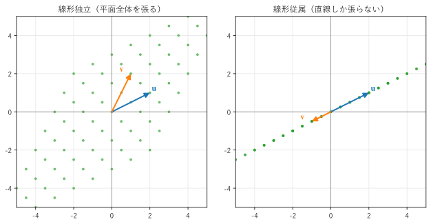
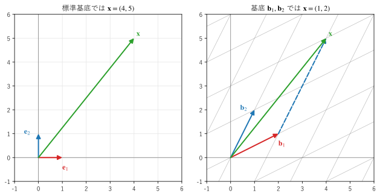

第 7 章 ベクトル空間と基底
第 II 部では、ベクトルの集まりが作る「空間」を扱う。この章では、部分空間、線形独立、基底、次元を定義する。これらは、第 8 章で連立一次方程式の解の構造を明らかにし、第 9 章で直交性を扱うための準備である。
部分空間
ベクトルの和とスカラー倍が定義された集合をベクトル空間という。\(\mathbb{R}^n\) はその代表例である。本書では \(\mathbb{R}^n\) とその部分集合だけを扱う。
\(\mathbb{R}^n\) の部分集合 \(V\) が、次の 2 つの条件を満たすとき、\(V\) を部分空間という。
\(\bm{u}, \bm{v} \in V\) なら \(\bm{u} + \bm{v} \in V\)（和について閉じている）
\(\bm{v} \in V\) なら、任意の数 \(c\) について \(c\,\bm{v} \in V\)（スカラー倍について閉じている）
つまり、部分空間は、線形結合を作っても外に出ない集合である。\(c = 0\) とすると \(\bm{0} \in V\) なので、部分空間は必ず原点を含む。
\(\mathbb{R}^3\) の部分空間は、次の 4 種類しかない。
原点だけからなる集合 \(\{\bm{0}\}\)
原点を通る直線
原点を通る平面
\(\mathbb{R}^3\) 全体
原点を通らない直線や平面は、部分空間ではない。例えば、平面 \(z = 1\) の上の 2 点を足すと \(z = 2\) になり、平面から出てしまう。
張る空間
ベクトル \(\bm{v}_1, \ldots, \bm{v}_k\) の線形結合 \(c_1 \bm{v}_1 + \cdots + c_k \bm{v}_k\) 全体の集合を、\(\bm{v}_1, \ldots, \bm{v}_k\) が張る空間といい、\(\mathrm{span}\{\bm{v}_1, \ldots, \bm{v}_k\}\) と書く。張る空間は、線形結合について閉じているので部分空間である。
図 9 は、2 つのベクトル \(\bm{u}, \bm{v}\) の線形結合 \(c_1 \bm{u} + c_2 \bm{v}\) を、係数 \(c_1, c_2\) を -2 から 2 まで 0.5 刻みで変えて点を打ったものである。

図 9 ベクトル u、v が張る空間。左は u = (2, 1)、v = (1, 2)、右は u = (2, 1)、v = (-1, -0.5)
左の図では、点は斜めの格子状に平面全体に広がる。係数を連続的に変えれば平面のすべての点に届くので、\(\bm{u}, \bm{v}\) は平面 \(\mathbb{R}^2\) 全体を張る。右の図では、\(\bm{v} = -0.5\,\bm{u}\) なので、どのような線形結合も \(\bm{u}\) のスカラー倍になり、点は 1 本の直線の上にしか乗らない。2 本のベクトルがあっても、張る空間は直線（1 次元）である。
サンプルの全体：ch07_span.py
線形独立と線形従属
右の図の \(\bm{v}\) は、\(\bm{u}\) で表せるので「余分な」ベクトルである。この「余分なベクトルがあるかどうか」を正確に定義したものが線形独立である。
ベクトル \(\bm{v}_1, \ldots, \bm{v}_k\) について、
を満たす係数が \(c_1 = c_2 = \cdots = c_k = 0\) しかないとき、\(\bm{v}_1, \ldots, \bm{v}_k\) は線形独立（一次独立）であるという。線形独立でないとき、つまり、すべてが 0 ではない係数で上の式が成り立つとき、線形従属（一次従属）であるという。
線形従属なら、0 でない係数 \(c_i\) について式を \(\bm{v}_i\) について解けるので、\(\bm{v}_i\) を他のベクトルの線形結合で表せる。つまり、線形従属とは「どれか 1 つが、他のベクトルで表せる（余分である）」ことであり、線形独立とは「どれも他のベクトルで表せない」ことである。
ベクトルを列に並べた行列 \(A = (\bm{v}_1 \ \cdots \ \bm{v}_k)\) を使うと、上の式は \(A\bm{c} = \bm{0}\) と書ける。したがって、次のように言い換えられる。
\(\bm{v}_1, \ldots, \bm{v}_k\) が線形独立 \(\iff\) \(A\bm{c} = \bm{0}\) の解が \(\bm{c} = \bm{0}\) だけ
\(A\) が正方行列なら、これは \(\det A \ne 0\) と同値である（第 6 章）。一般には、第 8 章で扱うランクを使って判定する。ベクトルが \(k\) 本のとき、\(A\) のランクが \(k\) なら線形独立である。
11def report() -> None:
12 """2 組のベクトルについて、線形独立かを判定する."""
13 sets = {
14 "組 1": [[1.0, 0.0, 1.0], [0.0, 1.0, 1.0], [1.0, 1.0, 0.0]],
15 "組 2": [[1.0, 2.0, 3.0], [4.0, 5.0, 6.0], [7.0, 8.0, 9.0]],
16 }
17 for name, vectors in sets.items():
18 a = np.column_stack(vectors) # ベクトルを列に並べる
19 rank = np.linalg.matrix_rank(a)
20 result = "線形独立" if rank == len(vectors) else "線形従属"
21 print(f"{name}: ランク {rank}、{result}")
22
23 v1, v2, v3 = (np.array(v) for v in sets["組 2"])
24 print("組 2 の v1 - 2 v2 + v3 =", v1 - 2 * v2 + v3)
組 1: ランク 3、線形独立
組 2: ランク 2、線形従属
組 2 の v1 - 2 v2 + v3 = [0. 0. 0.]
組 2 の 3 本のベクトル \((1, 2, 3), (4, 5, 6), (7, 8, 9)\) は、\(\bm{v}_1 - 2\bm{v}_2 + \bm{v}_3 = \bm{0}\) を満たすので線形従属である。3 本とも原点を通る同じ平面の上にあり、張る空間は 3 次元ではなく 2 次元の平面になる。np.linalg.matrix_rank() は、行列のランクを求める関数である。
サンプルの全体：ch07_independence.py
基底と次元
部分空間 \(V\) のベクトル \(\bm{b}_1, \ldots, \bm{b}_k\) が、次の 2 つの条件を満たすとき、\(\bm{b}_1, \ldots, \bm{b}_k\) を \(V\) の基底という。
\(V\) を張る（\(V\) のどのベクトルも、\(\bm{b}_1, \ldots, \bm{b}_k\) の線形結合で表せる）
線形独立である（余分なベクトルがない）
基底は「空間を表すのに必要十分なベクトルの組」である。1 つの空間に基底は無数にあるが、基底を構成するベクトルの本数は、どの基底でも同じであることが証明できる。この本数を \(V\) の次元といい、\(\dim V\) と書く。
\(\mathbb{R}^n\) の最も簡単な基底は、基本ベクトル \(\bm{e}_1, \ldots, \bm{e}_n\) である。これを標準基底という。標準基底は \(n\) 本なので、\(\dim \mathbb{R}^n = n\) である。原点を通る直線の次元は 1、原点を通る平面の次元は 2 であり、日常の感覚での「次元」と一致する。
次元についての、次の事実は便利である。
\(n\) 次元の空間では、\(n\) 本より多いベクトルは必ず線形従属である。
\(n\) 次元の空間では、線形独立な \(n\) 本のベクトルは必ず基底になる（空間全体を張る）。
例えば、図 9 の左の \(\bm{u}, \bm{v}\) は、\(\mathbb{R}^2\) の線形独立な 2 本のベクトルなので、\(\mathbb{R}^2\) の基底である。
座標と基底の取り替え
基底 \(\bm{b}_1, \ldots, \bm{b}_n\) を決めると、空間のどのベクトル \(\bm{x}\) も
とただ 1 通りに表せる（基底が線形独立なので、表し方は 1 通りである）。係数を並べた \((c_1, \ldots, c_n)\) を、この基底に関する \(\bm{x}\) の座標という。普段使っている座標は、標準基底に関する座標である。
同じベクトルでも、基底が異なれば座標は異なる。図 10 の左は、標準基底では \((4, 5)\) と表されるベクトル \(\bm{x}\) である。右は、同じ \(\bm{x}\) を、基底 \(\bm{b}_1 = (2, 1)\)、\(\bm{b}_2 = (1, 2)\) の作る斜めの方眼の上に描いたものである。\(\bm{x} = 1\,\bm{b}_1 + 2\,\bm{b}_2\) なので、この基底に関する座標は \((1, 2)\) になる。

図 10 標準基底による座標（左）と、基底 b1、b2 による座標（右）
基底ベクトルを列に並べた行列を \(B = (\bm{b}_1 \ \cdots \ \bm{b}_n)\) とすると、座標 \(\bm{c}\) と標準基底の座標 \(\bm{x}\) の関係は \(\bm{x} = B\bm{c}\) である。したがって、座標 \(\bm{c}\) は連立一次方程式 \(B\bm{c} = \bm{x}\) を解けば求められる。
20def report() -> None:
21 """x の、基底 b1、b2 に関する座標を求める."""
22 c = np.linalg.solve(B, X) # B c = x を解く
23 print("b1、b2 に関する座標 c =", c)
24 print("B @ c =", B @ c) # 標準基底の座標に戻す
b1、b2 に関する座標 c = [1. 2.]
B @ c = [4. 5.]
サンプルの全体：ch07_basis_change.py
基底の取り替えは、問題を解きやすい座標系で考えるための強力な道具である。例えば、第 10 章では、行列の固有ベクトルを基底に選ぶと、行列が対角行列という簡単な形になることを示す。また、標準基底で行列 \(A\) が表す線形変換は、基底 \(\bm{b}_1, \ldots, \bm{b}_n\) に関する座標では \(B^{-1}AB\) という行列で表される（座標を標準基底に直し、\(A\) で変換し、座標を元の基底に戻す）。
この章のまとめ
部分空間は、和とスカラー倍について閉じた集合であり、必ず原点を含む。
ベクトルの線形結合全体を、ベクトルが張る空間という。
どのベクトルも他のベクトルで表せないとき、ベクトルの組は線形独立である。
空間を張る線形独立なベクトルの組を基底といい、その本数を次元という。
基底を決めると、ベクトルの座標が決まる。基底 \(B\) に関する座標は \(B\bm{c} = \bm{x}\) を解いて求められる。